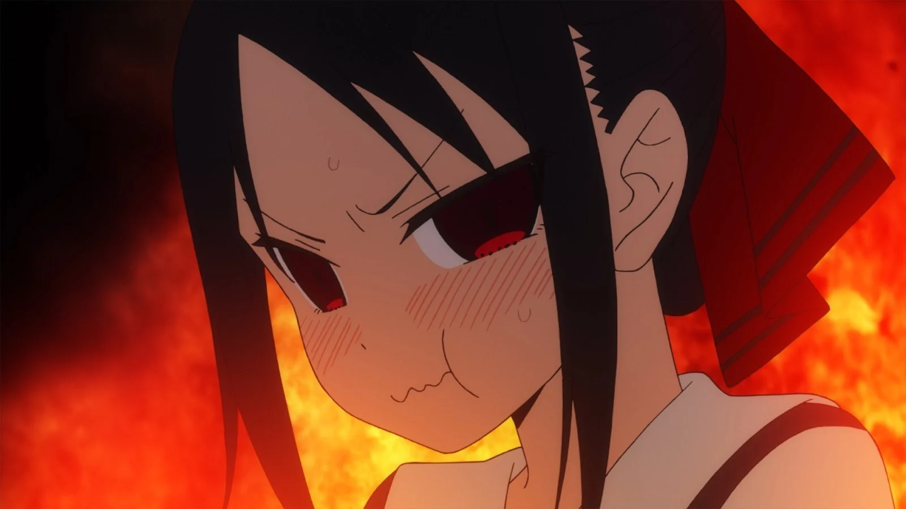
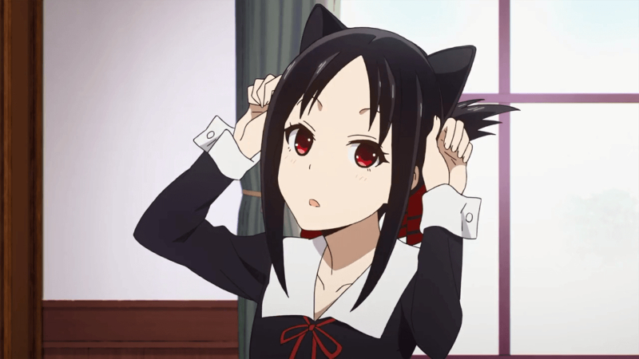
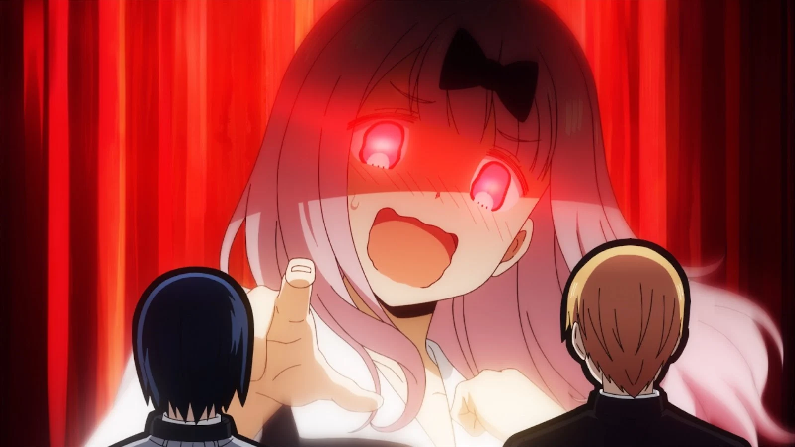
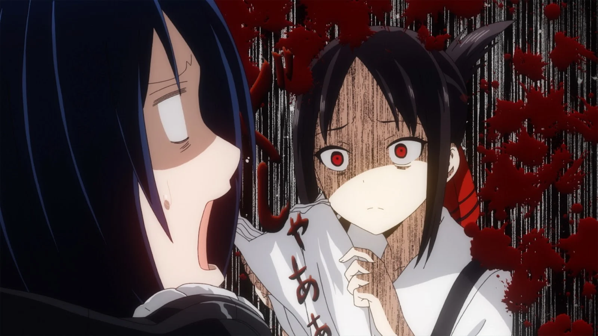
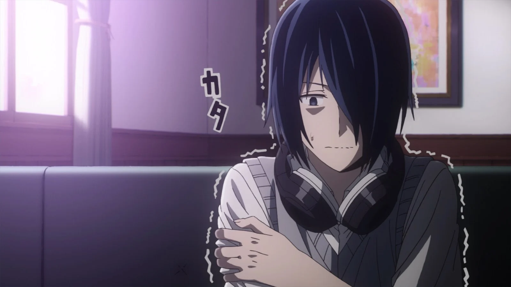
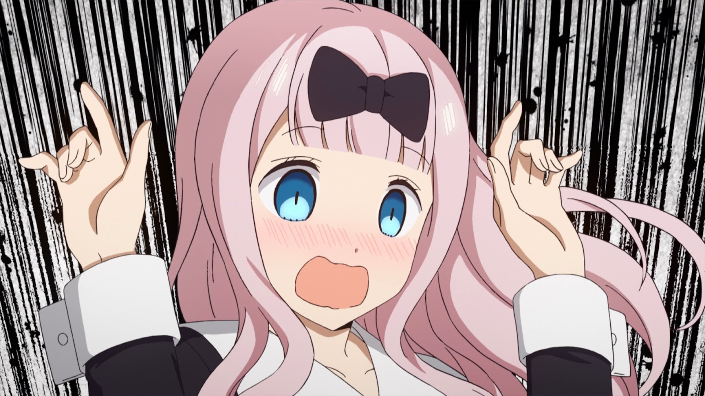

5 Alasan Kaguya Sama Love Is War Wajib Untuk Ditonton
Diposting Oleh: Mochammad Ahsan Nur Ilham 9 Mei 2024.
Kamu suka romance yang tidak mainstream? Serial ini jawabannya! Serial ini menceritakan kisah Miyuki Shirogane dan Kaguya Shinomiya yaitu seorang Ketua OSIS dan Wakil Ketua OSIS yang amat sangat romantis. Tentu sebagai serial anime yang menarik buat ditonton, kamu harus mengetahui terlebih dahulu soal Kaguya Sama Love Is War. Ada beberapa pembahasan menarik kenapa Kaguya Sama Love Is War wajib sekali untuk ditonton. Penasaran apa saja? Berikut adalah pembahasan lengkapnya soal kenapa serial anime ini menarik untuk ditonton dan wajib buat kamu yang suka romantis.
1. Bukan Tipikal Anime Romantis pada Umumnya
Pada awalnya, plot serial ini terdengar seperti anime romantis pada umumnya di mana dua karakter utama tidak bisa mengucapkan ungkapan cinta satu sama lain. Namun, adaptasi mangaaka Akasa tidak memiliki banyak kesamaan dengan serial romantis lainnya misalnya Kamisama Kiss dan Horimiya. Serial ini menggunakan pendekatan dewasa untuk romansa yang penting untuk narasi. Selain itu, campuran genre psikologis, dan komedi membuatnya menjadi anime yang menarik. Di sini Kaguya dan Miyuki memiliki hubungan yang tidak biasa. Ini yang membuatnya menarik.
2. Animasinya Unik
Biasanya anime yang mengangkat tema kehidupan sehari-hari dan komedi tidak memberikan banyak konten atau ruang untuk bereksperimen dengan gaya animasi. Untungnya serial Kaguya Sama benar-benar dahsyat dari sisi animasi dan terlihat cocok dengan anime modern kebanyakan. Sutradara serial Shinichi Omata, juga dikenal dengan nama samaran Mamoru Hatakeyama, menyukai pendekatan kreatif apa pun dan mendorong anggota tim lainnya untuk mengeksplorasi sebanyak mungkin soal animasi. Close-up camera, potret emosi, dan elemen minor membuat estetika dari serial ini terlihat dahsyat. Sejauh ini cukup jarang anime dengan tema kehidupan sehari-hari menggunakan model visual unik dan beragam seperti ini.
3. Komedinya yang Kocak
Remaja yang kesusahan dalam hal cinta selalu menyenangkan untuk ditonton, tetapi perasaan, status, dan kebanggaan Kaguya dan Miyuki yang menyatu membuat faktor komedi di dalam serial ini terlihat sangat seru untuk dinikmati. Waktu, tempo lelucon, punchline, dan perilaku ekstra karakter yang berlebihan membentuk anime ini seperti sebuah sitcom. Meski begitu, tetap ada unsur serius di anime ini yang membuatnya menjadi sedikit surealis. Kamu yang suka dengan komedi yang bagus cocok sekali menonton serial anime ini.
4. Setiap Karakter Unik
Kaguya dan Miyuki, sebagai karakter utama, selalu menjadi sorotan, tetapi pemeran pendukungnya juga patut diperhatikan. Setiap siswa Akademi Shuchiin memiliki tujuan, impian, dan pendapat mereka sendiri. Ini artinya, mereka tidak dibuat hanya demi menjadi tambahan khusus untuk karakter utama. Karakter yang punya keunikan sendiri ini membuat kisah yang ada di dalam anime ini menjadi lebih berbobot dan berkualitas.
5. Chika Dance Song? Apa Itu?
Chikatto Chika Chikattsu adalah sebuah lagu yang muncul di dalam serial ini. Animasi yang menarik membuatnya menjadi ikon. Ditambah musik yang dahsyat, semua terasa sempurna. Hadirnya Chika Dance Song membuatnya menjadi selingan yang kocak buat bagi para penggemar.
Sumber Informasi: Dunia Games